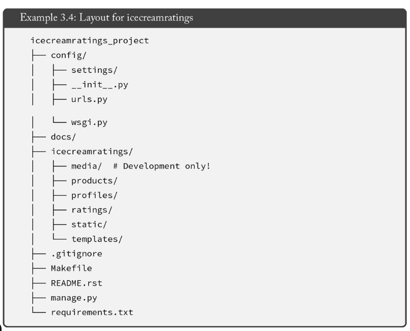

This chapter gives you a complete practical understanding of how to
correctly install, configure, and work with Django 5
following industry-level best practices.
Most beginner mistakes in Django happen during the setup stage.
Learning this chapter properly will save you hours of debugging later.
1. Check Installed Software (Before Anything Else)
Check Python Version
python --version
- Required: Python 3.10 or higher
Django 5 does not support older Python versions.
Using an outdated version will cause installation or runtime errors.
Check pip (Python Package Installer)
pip --version
Check Django (If Already Installed)
django-admin --version
2. What is pip freeze?
pip freeze

The pip freeze command lists all installed Python packages
along with their exact versions.
Django==5.0.1
asgiref==3.7.2
sqlparse==0.4.4
Why pip freeze is Important
- Ensures same environment on all systems
- Required for team projects
- Essential for deployment
- Prevents “works on my machine” issues
Save Dependencies
pip freeze > requirements.txt
Install on Another System
pip install -r requirements.txt
Your teammate can set up the project with one command without guessing versions.
3. Installing Django in Another Drive
Avoid using the C drive for projects when possible.
Using D or E drive improves organization and avoids storage issues.
Create Project Folder
D:
mkdir django_projects
cd django_projects

4. Create & Activate Virtual Environment
Install virtualenv (Once)
pip install virtualenv
Create Virtual Environment
virtualenv venv

Activate Virtual Environment
venv\Scripts\activate
When activated, your terminal will show:
(venv)
5. Install Django (Inside Virtual Environment)
pip install django
Never install Django globally for projects.
Always install it inside a virtual environment.
Verify Installation
django-admin --version
6. Best Practices (Very Important)
- Always use virtual environment
- Create
requirements.txt for every project
- Avoid global package installation
- Maintain clean folder structure
- Always verify versions
django_projects/
│── venv/
│── myproject/
│── requirements.txt
Deactivate Virtual Environment
deactivate
7. Creating a Django Project
Case 1: Folder Does Not Exist
django-admin startproject sms
Case 2: Folder Already Exists
django-admin startproject sms .

8. Start Django Development Server
python manage.py runserver
Open in browser:
http://127.0.0.1:8000/
Stop Server
CTRL + C
Final Summary
Correct installation and setup are the foundation of every Django project.
Using virtual environments, managing dependencies, and following best
practices will keep your projects stable, scalable, and professional.